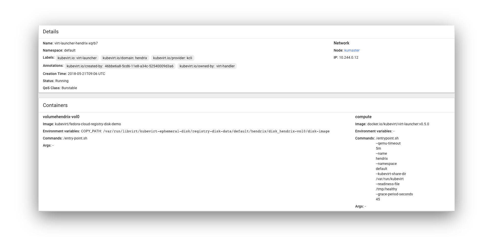
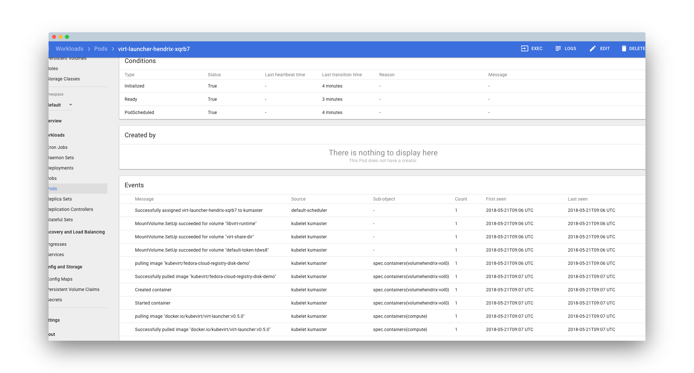

KubeVirt Quickstart
This demo will deploy KubeVirt on an existing Kubernetes (1.9 or later) or OpenShift Origin (3.9 or later) cluster. For a quick way to bring up a Kubernetes or OpenShift Origin cluster, see Minikube and Minishift.
Deploy KubeVirt
KubeVirt deploys as an add-on to a Kubernetes (1.9 or later) cluster, using the kubectl tool and the following manifest file:
$ export VERSION=v0.7.0-alpha.2
$ kubectl create \
-f https://github.com/kubevirt/kubevirt/releases/download/$VERSION/kubevirt.yaml
Note: The initial deployment to a new cluster can take a long time, because a number of containers have to be pulled from the internet. Use
watch kubectl get --all-namespaces podsto monitor the progress.
Deploying KubeVirt on OpenShift Origin
On OpenShift Origin, the following SCCs need to be added prior kubevirt.yaml deployment:
$ oc adm policy add-scc-to-user privileged system:serviceaccount:kube-system:kubevirt-privileged
$ oc adm policy add-scc-to-user privileged system:serviceaccount:kube-system:kubevirt-controller
$ oc adm policy add-scc-to-user privileged system:serviceaccount:kube-system:kubevirt-infra
$ export VERSION=v0.7.0-alpha.2
$ oc apply -f https://github.com/kubevirt/kubevirt/releases/download/${VERSION}/kubevirt.yaml
Install virtctl
Note: This requires
kubectlfrom Kubernetes 1.9 or later on the client
An additional binary is provided to get quick access to the serial and graphical ports of a VM, and handle start/stop operations.
The tool is called virtctl and can be retrieved from the release page of KubeVirt:
$ curl -L -o virtctl \
https://github.com/kubevirt/kubevirt/releases/download/$VERSION/virtctl-$VERSION-linux-amd64
$ chmod +x virtctl
Deploy a VirtualMachine
Once you deployed KubeVirt you are ready to launch a VM:
# Creating a virtual machine
$ kubectl apply -f https://raw.githubusercontent.com/kubevirt/demo/master/manifests/vm.yaml
# After deployment you can manage VMs using the usual verbs:
$ kubectl get vms
$ kubectl get vms -o yaml testvm
# To start an offline VM you can use
$ ./virtctl start testvm
$ kubectl get vmis
$ kubectl get vmis -o yaml testvm
# To shut it down again
$ ./virtctl stop testvm
# To delete
$ kubectl delete vms testvm
# To create your own
$ kubectl create -f $YOUR_VM_SPEC
Accessing VMs (serial console & spice)
# Connect to the serial console
$ ./virtctl console testvm
# Connect to the graphical display
# Note: Requires `remote-viewer` from the `virt-viewer` package.
$ ./virtctl vnc testvm
User Guide
Now that KubeVirt is up an running, you can take a look at the user guide to understand how you can create and manage your own virtual machines.
Appendix: Deploying minikube
-
If not installed, install minikube as described here
- Install the kvm2 driver
- Verify nested virtualization is enabled on the machine minikube is being installed on:
$ cat /sys/module/kvm_intel/parameters/nested YIf not, then enable it as described here
- Download the
minikubebinary
-
Launch minikube with CNI:
$ minikube start \ --vm-driver kvm2 \ --network-plugin cni -
Install
kubectlvia a package manager or download it
KubeVirt on an existing Kubernetes cluster
If you already have a Kubernetes cluster, you can use kubevirt-ansible to deploy KubeVirt.
First clone the kubevirt-ansible repo on your master Kubernetes node.
git clone https://github.com/kubevirt/kubevirt-ansible
cd kubevirt-ansible
KubeVirt with no additional storage
To install KubeVirt without adding additional storage capabilities:
ansible-playbook -i localhost -e cluster=k8s -e storage_role=storage-none playbooks/kubevirt.yml
KubeVirt with storage environment for development and testing
KubeVirt can also be installed with a self-contained storage environment, using Ceph and Cinder, that is geared for non-production use. To install KubeVirt with the demo storage environment, first edit the inventory file and populate the section named “masters”, “etcd”, and “nodes”.
# inventory
# BEGIN CUSTOM SETTINGS
[masters]
# Your master FQDN
[etcd]
# Your etcd FQDN
[nodes]
# Your nodes FQDN's
[nfs]
# Your nfs server FQDN
[glusterfs]
# Your glusterfs nodes FQDN
# Each node should have the "glusterfs_devices" variable, which
# points to the block device that will be used by gluster.
#
# If you run openshift deployment
# You can add your master as schedulable node with option openshift_schedulable=true
# Add at least one node with lable to run on it router and docker containers
# openshift_node_labels="{'region': 'infra','zone': 'default'}"
# END CUSTOM SETTINGS
Once you have your inventory file filled in:
ansible-playbook -i inventory -e cluster=k8s -e storage_role=storage-demo playbooks/kubevirt.yml
KubeVirt with GlusterFS and Heketi storage environment
To install GlusterFS and Heketi on Kubernetes, follow the setup guide in gluster-kubernetes repo. You will need to configure the admin key with gk-deploy and at end of the install note the Heketi URL.
Once you have GlusterFS and Heketi installed on your Kubernetes cluster, you can deploy KubeVirt with the storage-glusterfs role to setup a Secret and a StorageClass to allow you to provision Persistent Volume Claims to store your VM images.
First edit the inventory file and populate the sections “master”, “etcd”, “nodes”, and “glusterfs”.
# inventory
# BEGIN CUSTOM SETTINGS
[masters]
# Your master FQDN
[etcd]
# Your etcd FQDN
[nodes]
# Your nodes FQDN's
[nfs]
# Your nfs server FQDN
[glusterfs]
# Your glusterfs nodes FQDN
# Each node should have the "glusterfs_devices" variable, which
# points to the block device that will be used by gluster.
#
# If you run openshift deployment
# You can add your master as schedulable node with option openshift_schedulable=true
# Add at least one node with lable to run on it router and docker containers
# openshift_node_labels="{'region': 'infra','zone': 'default'}"
# END CUSTOM SETTINGS
Then run this playbook, substituting the namespaces and heketi_url to match your environment:
ansible-playbook -i inventory -e cluster=k8s -e storage_role=storage-glusterfs -e namespace=kube-system -e glusterfs_namespace=kube-system -e glusterfs_name= -e heketi_url=http://10.32.0.4:8080 playbooks/kubevirt.yml
How it looks like in the UI
Provided you deployed kubernetes dashboard, you will see this kind of pods for your vms

